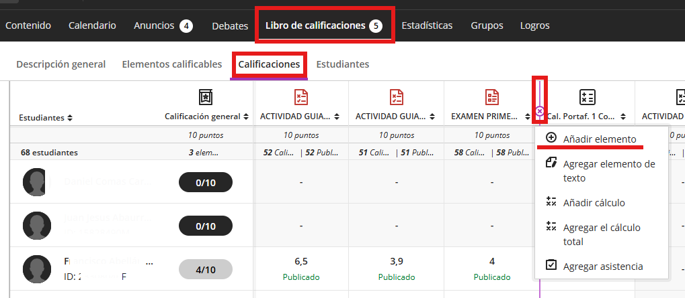
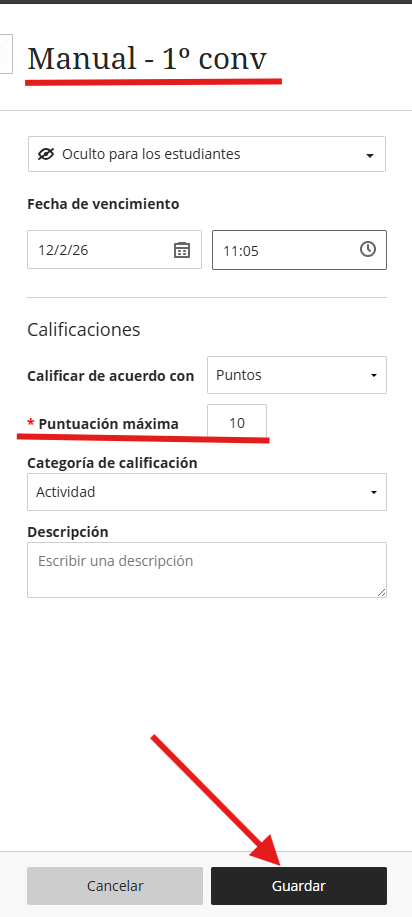

Aprenda a crear columnas independientes para registrar calificaciones que no provienen de actividades de Blackboard.
Las columnas manuales son útiles para añadir notas de participación, tutorías o cualquier criterio externo al aula virtual.
Ruta de acceso: Libro de calificaciones → Calificaciones → Añadir elemento (+)
Sitúe el cursor en la posición donde desea crear la columna y pulse el icono (+) que aparece entre los elementos existentes, luego seleccione Añadir elemento.

Configuración del elemento
Se abrirá un panel lateral para configurar los parámetros básicos:
- Título: Indique un nombre descriptivo para identificar la columna rápidamente.
- Puntuación máxima: Establezca el valor máximo (por defecto suele ser 10 o 100).
- Esquema de calificación: Seleccione si desea ver la nota en Puntos, Porcentaje o Letra.

Importante: Una vez configurado, pulse el botón Guardar en la parte inferior del panel para que la columna sea visible en su Libro de Calificaciones.
Hecho por Jose F. © 2026